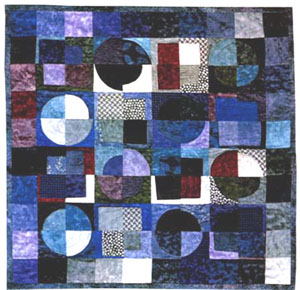

Home

Welcome!
Touching and working with fabric feeds my soul. It seems natural to me to create art with cloth. My earliest and happiest memories are of time spent in my grandfather’s upholstery studio taking one luscious scrap after another from his discard box.
I am a mixed-media artist who uses textiles as a starting point for my art. Whether I’m working on a commission or simply creating a new piece I believe every quilt tells a story.
Since 1985 I’ve spent most of my time teaching art in nursing homes. Each resident has a singular story that shines through in class discussion and in that individual’s art. I believe that the creative process is a component of healing and that allowing oneself to experience art with abandon promotes wellness. It is important to me to enrich the lives of everyone who participates in my workshops.